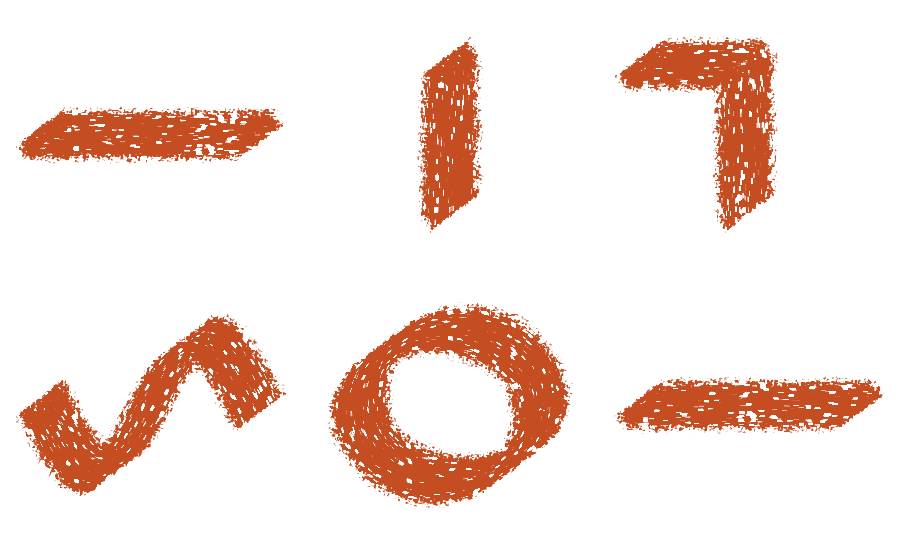

Implemented: loaded paint, retained relief and exact material history →
Palette knife: measured overlap defect, physical references and a paint model →
Brush orientation and stroke direction
A blade’s pose and the direction it travels are independent. A knife can be held diagonally and dragged sideways. Its contact shape reflects how it is held; scratches left by dragging should run with the movement. Sketchpad’s knife had reused the nib’s fixed mouse angle to orient the texture, and stretched the texture across that axis. That produced the diagonal chunks even in horizontal strokes.
The implemented correction separates those jobs. The broader recommendation is to expose fixed, initial-direction, continuing-direction and stylus-driven orientation as explicit authoring modes, with filtering and symmetry defined separately. These generalized controls are proposed engine capabilities, not newly added settings in the drawing UI.
Actual knife output

The angular outer silhouette remains the blade’s footprint. The corrected internal grooves follow travel independently. The output is generated by the existing native opacity study, extended with direction cases. It is not an illustration generated to resemble the intended behavior.
Previous opacity correction and fixed-angle samples · Open this native sheet at full size
{kind=link}
Orientation modes and their uses
| Mode | What drives the angle | Useful behavior |
|---|---|---|
| Fixed angle | A preset or artist-selected angle. | Predictable chisel/calligraphy widths. Horizontal and vertical travel can produce different widths. |
| Initial direction | The first meaningful movement establishes an angle, held for the contact. | Each stroke can begin differently while retaining a deliberate nib orientation through its curve. |
| Follow direction | The evolving tangent of the reconstructed stroke. | Rakes, fibers, chains and motion-aligned texture turn with the path. |
| Filtered follow | A direction estimate that responds over a controlled amount of movement. | Reduces small angular chatter. Strong filtering delays turns, which needs visible, predictable control. |
| Pen azimuth | The direction of the pen’s lean projected onto the surface. | Orient a non-round tip through how the pen is held, independently of travel. |
| Barrel rotation | Physical twist around the pen’s own axis, on supported hardware. | Rotate a flat nib deliberately without changing its travel or needing to lean it differently. |
Photoshop documents Initial Direction and Direction as separate angle controls. Krita exposes a drawing-angle lock, angle offset and fan-corner behavior, alongside tilt direction and stylus rotation. This supports treating these as independent modes rather than one generic “rotation” checkbox. [1] [2]
Sketchbook’s Rotate to Stroke turns stamps along a path; its documentation gives patterns that follow a loop as an example. Stylus tilt and supported barrel roll are a separate option. Procreate similarly supports Follow Stroke, azimuth, and barrel roll; its Relative to Stroke option uses the initial travel direction to establish the roll’s starting orientation. These public controls describe behavior, not a disclosure of each application’s internal algorithm. [3] [4]
Krita’s rotation reference explicitly distinguishes the axes associated with tilt direction and drawing direction. It also defines a neutral fallback for a vertical pen, unsupported tilt or mouse input. A portable engine needs such conventions; “use the pen angle” is incomplete when the device supplies no reliable angle. [5]
Interactive orientation comparison
Choose a mode and move the progress slider. The orange outline is an elongated tip; the gray line is its travel. This is a geometric explanation, not Sketchpad’s brush renderer or a reproduction of a commercial brush.
The demonstration treats the tip as an axis: reversing travel by 180° does not change its orientation. Filtering uses a distance-based angular response. A directed arrow or asymmetric image tip needs a full 360° convention instead. Changing the pen-angle slider affects the pen-driven mode even though the path stays the same.
Stops, corners and continuing a direction
A direction is state, not just an angle formula
Subtracting two positions gives a segment direction, but a stationary point has none. Very small displacements can amplify device jitter into large angular changes. For the general engine, initialize from the first meaningful motion, hold the last reliable heading while stationary, and resume following once enough movement is available. This should filter orientation separately from position so a stable nib does not require a lagging cursor.
MyPaint’s source implements an orientation filter using movement rather than wall-clock time, and tracks both a full direction and a variant that ignores a 180° reversal. For the latter, it chooses the closer of a movement vector and its negative before updating the filter. This is a concrete example of recognizing that an unoriented brush axis and a directed tip need different handling. Its settings describe the tradeoff between fast response and smoother direction. [6] [7]
Proposed policy: represent heading and heading-validity explicitly. Keep initial heading, current heading and any filtered heading distinct. Record the state through active-stroke chunks. Use a documented fallback at first contact and for hover; future travel cannot be known before motion. A dab should appear immediately, with any subsequent orientation development defined rather than guessed from a zero vector.
Curves and sharp turns
On smooth curves, follow the reconstructed local tangent. At an intentional corner, a preset can turn immediately, interpolate a limited fan of orientations, or behave like a trailing flexible tool. Those are distinct mark styles. Krita’s fan-corner option demonstrates that corner treatment can be an explicit setting, but its existence does not establish the best default for every material. [2]
For a blade’s scrape texture, local travel is the appropriate immediate default. For a bristle bundle, a delayed or simulated response may be useful. For a calligraphy nib, automatically following every turn may remove the deliberate width variation the artist expects. Each preset should therefore choose an orientation source for its shape and, independently, for its internal texture.
Interpolation must respect angular wrap. A transition from 179° to −179° is a small turn, not a nearly complete revolution. An axis repeats after 180°, while an asymmetric tip repeats after 360°. Averaging scalar degrees blindly, or normalizing an average of opposite vectors, can produce spins or undefined headings. Reversal and cusp behavior should be test cases, not incidental consequences of the chosen math.
“Continuing direction” within and between contacts
While the pen stays down, retain heading through a pause and storage chunk; neither should start a new orientation sequence. Continuing along a curve means updating heading as travel changes. Initial-direction lock instead intentionally holds the first heading for the entire contact.
After lift, reset initial-direction acquisition for the next stroke by default. An optional remembered tool angle can be useful for repeated stamps, but it should be a separate control. Carrying the last stroke’s tangent into every new stroke can make the next mark depend unexpectedly on where the artist previously drew. Brush switching, undo and document loading also need explicit reset rules if orientation persists beyond contact.
Tablet, mouse and canvas transforms
Use azimuth or roll only when the device reports them reliably. Near a vertical pen, azimuth becomes poorly determined; preserve a stable pose or use the preset’s fallback rather than interpreting noise as deliberate rotation. Map screen-space input into document coordinates before deriving travel. A future rotated or mirrored view must transform angle conventions consistently with positions.
The proposed compact authoring controls are: orientation source, angle offset, response distance, axis/directed symmetry, and an explicit remember-angle option. Most artists should encounter a tuned preset rather than this whole list in the drawing workspace. The preview must reflect the selected behavior and should not imply that mouse input has real barrel-rotation data.
Implemented correction and remaining work
The knife now extends small features of the fixed paper texture along the current segment’s travel. Five symmetric local samples produce short grooves. The nib’s tilt-driven geometry is unchanged. Using local offsets keeps the paper phase anchored as a curve turns; a transform of the entire paper around the document origin would shift the pattern as heading changes.
The sampling is symmetric under reversal and independent of segment length once direction is established. It therefore avoids spinning the pattern on a return stroke or restarting it at every input subdivision. An exactly stationary dab leaves the tooth unextended. The current v1 shader inputs do not carry a previous heading, so retaining heading during stationary pressure/tilt changes remains part of the proposed richer contract.
The existing maximum-coverage accumulation can fill some scrapes where differently oriented portions of a stroke overlap. This correction is a local directional texture, not a continuous transported groove, pigment simulation or general orientation-control implementation. Those distinctions are visible in the curve and corner samples and should guide the next material-engine stage.
A new coverage test checks horizontal, vertical and both diagonal axes, measures stronger variation across the grooves than along them, and checks reversal and equivalent subdivision. Existing checks retain opaque paint, localized scraping, subpixel bounds, CPU/GPU agreement, large contacts, undo and saving. Five paper samples replace one for the knife’s scrape field; this change does not establish a performance improvement.
Atlas and Apollo passed the full ordinary test suite, native opacity/direction study, media/history/save regression, CPU/GPU mask oracle and release build. Both machines produced identical opacity-study counts. Changed Rust files passed formatting checks; Atlas all-target Clippy passed with the existing argument-count and loop-style allowances. No new orientation state or user-facing mode selector was added to the native application.
References
Reviewed September 13, 2026. Recommendations above are design judgments derived from the documented distinctions and Sketchpad’s implementation. No physical-tablet orientation study or cross-application performance test was performed.
- Adobe. Add dynamic elements to brushes in Photoshop. Updated May 24, 2023; includes older-version applicability. Initial Direction and Direction controls.
- Krita Manual 5.3.0. Sensors. Drawing angle, lock, fan corners, tilt and rotation.
- Sketchbook Help. Introduction to Brush Properties. Rotate to Stroke and stylus rotation dynamics.
- Procreate Help Center. Customizing brushes to suit you. Follow Stroke, azimuth, barrel roll and Relative to Stroke.
- Krita Manual 5.3.0. Options: Rotation. Tilt/drawing axes and neutral fallback.
- MyPaint contributors. mypaint-brush.c, master as reviewed. Orientation filter and full versus reversal-insensitive direction state.
- MyPaint contributors. brushsettings.json, master as reviewed. Direction filter and direction input definitions.